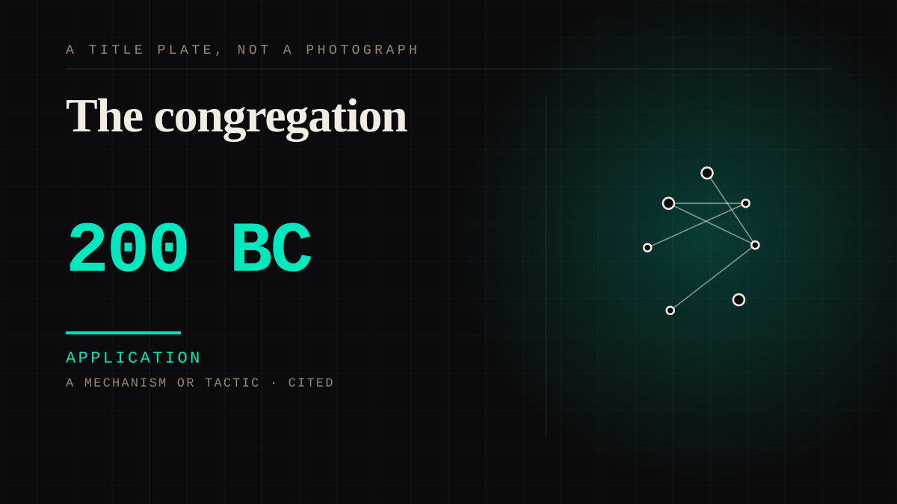

A mechanism or tactic · 200 BC · Faith
The congregation
A regular assembled audience for a figure who addresses them, in a building, on a schedule, for years.

The largest organised parasocial arrangement in history, and the one the field has never taken seriously as one. It has a leader, a schedule, a building, an emotional register, an exegesis tradition and a revenue model.
Application. One-sided attachment put to work on purpose. Creator economies, community, fandom as infrastructure, and the things that genuinely help people. Not automatically good - a tool with an obvious use is a tool that will also get a bad one.
Where it sits
3000 BC Before 0 · 200 BC 1 BC
Provenance · 6 source record(s)
- retrievableA fan forum is a functioning community, not a comment box: K-pop stan Twitter operates as a Community of Practice - members form interpersonal bonds, communicate regularly, and contribute in their own capacitiesMalik, Z., & Haidar, S. (2020). Online community development through social interaction - K-Pop stan twitter as a community of practice. Interactive Learning Environments, 31(2). ↗
- unverifiedAND THE FINDING NOBODY NOTICES: that community has a power hierarchy among its participants - described by the authors as 'usually the least noticed aspect in research on online platforms'. The folklore of equal fans is empirically falseMalik, Z., & Haidar, S. (2020). Interactive Learning Environments, 31(2). ↗
- retrievableWhy the congregation forms: PSRs develop because they fulfil a need to belong and are maintained through parasocial interaction and fandom activity; the authors conclude they may need redefining because fans perceive reciprocity. N=126 stan / N=111 non-stan / N=12 interviewsY/N and OOMFs: Development, Maintenance, and Consequences of Parasocial Relationships on Stan Twitter (2024). Asia Social Issues. ↗
- retrievableThe congregation is not a consolation prize. Some fans attributed the friends they most wanted to be close with to their fanship itselfAscue et al., Annyeong, Saranghae: A Phenomenological Study on the Effects of Parasocial Relationships between Adult Filipino K-pop Fans and their Idols. De La Salle University. ↗
- retrievableScale and intensity: 63% of adolescent fans (14-18) agreed or strongly agreed with at least 10 of 20 parasocial interaction scale items, 13% strongly agreed with 15 or more, and 52% reported over two hours a day on their idol's contentThe Psychological Impact of Parasocial Relationships on Adolescent K-pop Fans (explanatory sequential mixed methods, Ontario). ↗
- unverifiedThe verdict, in the participants' own words: 'You feel as if you've known them for a long time' - said about an idol sharing his feelings on a livestreamAscue et al., Annyeong, Saranghae (De La Salle University). ↗
Connected · 2 out, 9 in
The priestdepicts · 100 · A mechanism or tacticThe story told againof the same time as · 800 BC · A workA cohort nobody in it has metof the same time as · 1965 · An event or momentAm I not here, I who am your mother?came after · 1531 · A workShag-eared and deafcame before · 370 BC · A workA creed held rather than a god addressedof the same time as · 325 · A workThe story told againof the same time as · 800 BC · A workThe story told againdepicts · 800 BC · A workThe wax masks in the hallcame before · 250 BC · A workThink of nothing but the gurucame after · 1650 · A mechanism or tacticThe priesthappened in · 100 · A mechanism or tactic
It sits in